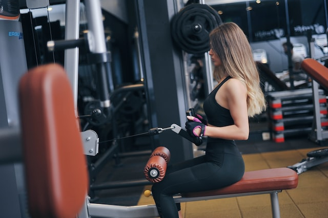

PROGRESSUS: free help and training advices by Petar Spasic
The difference between involvement and commitment is like an eggs-and-ham breakfast:
the chicken was involved; the pig was committed.
Your gym workout routine must be set in sync with your purpose. Whether you plan to shed the extra weight gained during the work-from-home era, or the purpose is to tone your body, it is important that you begin in a planned manner.
Everyone has different reasons for joining a gym. And lots of people are worried about using the equipment if they’ve never worked out in a gym before. These beginner gym workouts are ideal for various goals, whether you want to lose some weight or burn fat, build muscle and strength or improve your fitness. And don’t forget, your gym membership will include an induction with an expert personal trainer, so make the most of this time with them. Gym staff are really helpful and friendly so they can show you how to do the exercises and answer any questions.
Losing body fat can be a challenging task, often requiring hard work, patience, and dedication. Although many fad diets and fat-burning supplements promise quick results, modifying your diet, lifestyle, and exercise routine is the most effective way to reach and maintain a healthy weight.
Dietary fats offer several benefits that contribute to a healthful lifestyle. Long-term satiation, an improved cholesterol profile and reduced LDL cholesterol are just a few of the benefits found in "healthy" lipids such as polyunsaturated and monounsaturated fats. That said, fats' caloric density and lack of vitamin and mineral content makes them tough to fit in a restricted-calorie diet, making the inclusion of fruit, vegetables and lean proteins integral to a balanced nutrition profile.
You may only be starting to take the first steps on the road to fitness. Or you may be excited about exercise and want to improve your results. Either way, a well-rounded fitness training plan is essential.
Worried about heart disease? Hoping to prevent high blood pressure? No matter what your current weight is, being active boosts high-density lipoprotein (HDL) cholesterol, the "good" cholesterol, and it decreases unhealthy triglycerides. This one-two punch keeps your blood flowing smoothly, which decreases your risk of cardiovascular diseases.
Exercising can make a huge difference to your mood, especially when you’re feeling depressed, anxious, or stressed out. It increases your endorphin and serotonin levels, which makes you feel more positive and relieves negative emotions.
As The Happiness Warrior there’s a question that I find myself always coming back to: “how do we build a whole and happy being when we don’t understand how the pieces fit together?” Taking better care of ourselves and understanding how our bodies work sounds intuitive but when I look at the world around me, I see so much unnecessary suffering that comes when we neglect the connection between our mental and physical well-being.
Hi. Im Petar Spasic, a 21 years old student on IT academy in Serbia. I`m training actively for about 1 year now and this whole site is all my knowledge and experience, note that i also consulted some of my friends who are training longer than me for help. Since i started to train, my life got a drastic change, not only in my phisycal look but mentally too. My mood is better and i started to be a lot more proactive witch is why this site got the name it has. When i first started to train, there was a lot of questions i didnt have answer for. For example i didnt know what i want to change about my body, what exercise to do or what to eat. Thats why i startet looking it up on internet and found out all that knowledge had a price to be paid, which felt a little dissapointing. Thats why i created this site, for people like me who are new to this stuff and just wants some general knowledge that can sometimes help a lot. I finished 3D modeling high-school and right now im studying IT because it seemed like a right thing for me to do in life. I am living and studying in Belgrade. On this site you can also found my Email adress so feel free to contact me if u have some questions or new ideas. I would love to learn new things or correct you if u are doing something wrong with your workout.
Progressus is a site created so that people around the world can see for free whats good for their body. It was made for people that never trained but wanted to start or for people that trained in the past and wants to start again, so its a site for all people. It was created 2021 by Petar Spasic.
On Progressus you can see all kinds of courses and different meal recepies for burning fat / getting weight.
Of course, everyone will be having doubt about something that sounds to good to be true. I personally think if people want to try and train they can try this course that helped me and people around me a lot. You can always quit trainig with this course if you dont see difference in a few weeks but im sure that will not be a case, so why not give it a chance.
Uspesno ste poslali poruku!